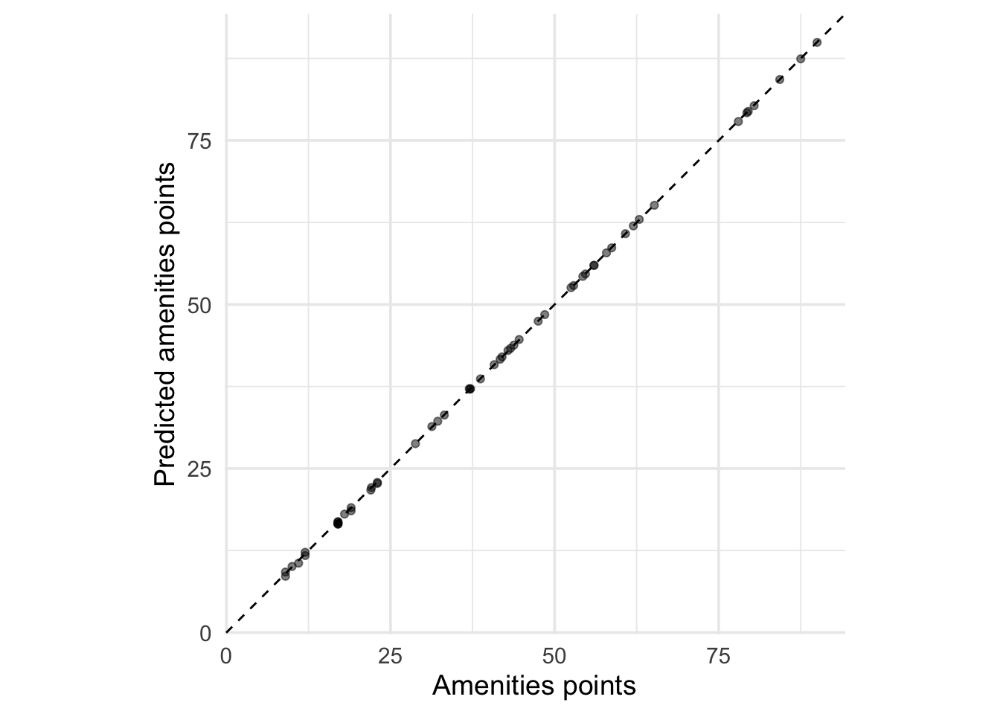

3.2 Inspecting and developing models
Being the sound analysts that we are, we should check if the assumptions of linear regression are violated. The plot() generic function has a specific method for lm objects that generates various diagnostic plots.

The second plot does not show any strong violation of the normality assumption. However, the first plot shows a violation of the linearity assumption (that there is a linear relationship between the response variable and the predictors). If the assumption were satisfied, the smooth red line would be like a straight horizontal line at y=0.
Note that there is a {ggplot2} way to generate the same plots.

But what about the coefficients?

##
## Call:
## lm(formula = Volume ~ ., data = trees)
##
## Residuals:
## Min 1Q Median 3Q Max
## -6.4065 -2.6493 -0.2876 2.2003 8.4847
##
## Coefficients:
## Estimate Std. Error t value Pr(>|t|)
## (Intercept) -57.9877 8.6382 -6.713 2.75e-07 ***
## Girth 4.7082 0.2643 17.816 < 2e-16 ***
## Height 0.3393 0.1302 2.607 0.0145 *
## ---
## Signif. codes: 0 '***' 0.001 '**' 0.01 '*' 0.05 '.' 0.1 ' ' 1
##
## Residual standard error: 3.882 on 28 degrees of freedom
## Multiple R-squared: 0.948, Adjusted R-squared: 0.9442
## F-statistic: 255 on 2 and 28 DF, p-value: < 2.2e-16Use {broom} for a tidy version.
## [90m# A tibble: 3 x 5[39m
## term estimate std.error statistic p.value
## [3m[90m<chr>[39m[23m [3m[90m<dbl>[39m[23m [3m[90m<dbl>[39m[23m [3m[90m<dbl>[39m[23m [3m[90m<dbl>[39m[23m
## [90m1[39m (Intercept) -[31m58[39m[31m.[39m[31m0[39m 8.64 -[31m6[39m[31m.[39m[31m71[39m 2.75[90me[39m[31m- 7[39m
## [90m2[39m Girth 4.71 0.264 17.8 8.22[90me[39m[31m-17[39m
## [90m3[39m Height 0.339 0.130 2.61 1.45[90me[39m[31m- 2[39m## Rows: 1
## Columns: 12
## $ r.squared [3m[90m<dbl>[39m[23m 0.94795
## $ adj.r.squared [3m[90m<dbl>[39m[23m 0.9442322
## $ sigma [3m[90m<dbl>[39m[23m 3.881832
## $ statistic [3m[90m<dbl>[39m[23m 254.9723
## $ p.value [3m[90m<dbl>[39m[23m 1.071238e-18
## $ df [3m[90m<dbl>[39m[23m 2
## $ logLik [3m[90m<dbl>[39m[23m -84.45499
## $ AIC [3m[90m<dbl>[39m[23m 176.91
## $ BIC [3m[90m<dbl>[39m[23m 182.6459
## $ deviance [3m[90m<dbl>[39m[23m 421.9214
## $ df.residual [3m[90m<int>[39m[23m 28
## $ nobs [3m[90m<int>[39m[23m 31{purrr} and {dplyr} can help you scale up your modeling process.

We can compare all of the models we made before.
list(
'reg' = reg_fit,
'inter' = inter_fit,
'poly' = poly_fit,
'no_height' = no_height_fit,
'no_intercept' = no_intercept_fit
) %>%
map_dfr(glance, .id = 'id') %>%
select(id, adj.r.squared) %>%
arrange(desc(adj.r.squared))## [90m# A tibble: 5 x 2[39m
## id adj.r.squared
## [3m[90m<chr>[39m[23m [3m[90m<dbl>[39m[23m
## [90m1[39m poly 0.975
## [90m2[39m inter 0.973
## [90m3[39m no_intercept 0.968
## [90m4[39m reg 0.944
## [90m5[39m no_height 0.933We observe that the polynomial fit is the best.
We can create models for each group in trees2.
reg_fits <-
trees2 %>%
group_nest(group) %>%
mutate(
fit = map(data, ~ lm(formula(Volume ~ .), data = .x)),
tidied = map(fit, tidy),
glanced = map(fit, glance),
augmented = map(fit, augment)
)
.select_unnest <- function(data, ...) {
data %>%
select(group, ...) %>%
unnest(...)
}
reg_fits %>% .select_unnest(tidied)## [90m# A tibble: 12 x 6[39m
## group term estimate std.error statistic p.value
## [3m[90m<chr>[39m[23m [3m[90m<chr>[39m[23m [3m[90m<dbl>[39m[23m [3m[90m<dbl>[39m[23m [3m[90m<dbl>[39m[23m [3m[90m<dbl>[39m[23m
## [90m 1[39m A (Intercept) -[31m44[39m[31m.[39m[31m6[39m 17.5 -[31m2[39m[31m.[39m[31m55[39m 0.031[4m2[24m
## [90m 2[39m A Girth 4.21 0.477 8.83 0.000[4m0[24m[4m0[24m[4m9[24m98
## [90m 3[39m A Height 0.250 0.294 0.849 0.418
## [90m 4[39m B (Intercept) -[31m66[39m[31m.[39m[31m1[39m 13.9 -[31m4[39m[31m.[39m[31m74[39m 0.017[4m8[24m
## [90m 5[39m B Girth 4.16 0.704 5.91 0.009[4m6[24m[4m9[24m
## [90m 6[39m B Height 0.520 0.123 4.24 0.024[4m0[24m
## [90m 7[39m C (Intercept) -[31m86[39m[31m.[39m[31m4[39m 90.5 -[31m0[39m[31m.[39m[31m954[39m 0.410
## [90m 8[39m C Girth 4.83 0.747 6.47 0.007[4m4[24m[4m8[24m
## [90m 9[39m C Height 0.680 1.20 0.567 0.611
## [90m10[39m D (Intercept) -[31m46[39m[31m.[39m[31m3[39m 14.8 -[31m3[39m[31m.[39m[31m14[39m 0.034[4m9[24m
## [90m11[39m D Girth 6.03 0.372 16.2 0.000[4m0[24m[4m8[24m[4m5[24m2
## [90m12[39m D Height -[31m0[39m[31m.[39m[31m0[39m[31m26[4m8[24m[39m 0.214 -[31m0[39m[31m.[39m[31m125[39m 0.906## [90m# A tibble: 4 x 13[39m
## group r.squared adj.r.squared sigma statistic p.value df logLik AIC BIC
## [3m[90m<chr>[39m[23m [3m[90m<dbl>[39m[23m [3m[90m<dbl>[39m[23m [3m[90m<dbl>[39m[23m [3m[90m<dbl>[39m[23m [3m[90m<dbl>[39m[23m [3m[90m<dbl>[39m[23m [3m[90m<dbl>[39m[23m [3m[90m<dbl>[39m[23m [3m[90m<dbl>[39m[23m
## [90m1[39m A 0.960 0.951 3.81 107. 5.27[90me[39m[31m-7[39m 2 -[31m31[39m[31m.[39m[31m3[39m 70.7 72.6
## [90m2[39m B 0.935 0.891 2.20 21.5 1.66[90me[39m[31m-2[39m 2 -[31m11[39m[31m.[39m[31m2[39m 30.3 29.5
## [90m3[39m C 0.946 0.910 4.06 26.2 1.26[90me[39m[31m-2[39m 2 -[31m14[39m[31m.[39m[31m8[39m 37.7 36.8
## [90m4[39m D 0.990 0.985 2.80 194. 1.04[90me[39m[31m-4[39m 2 -[31m15[39m[31m.[39m[31m2[39m 38.4 38.2
## [90m# … with 3 more variables: deviance [3m[90m<dbl>[90m[23m, df.residual [3m[90m<int>[90m[23m, nobs [3m[90m<int>[90m[23m[39m## [90m# A tibble: 31 x 10[39m
## group Volume Girth Height .fitted .resid .hat .sigma .cooksd .std.resid
## [3m[90m<chr>[39m[23m [3m[90m<dbl>[39m[23m [3m[90m<dbl>[39m[23m [3m[90m<dbl>[39m[23m [3m[90m<dbl>[39m[23m [3m[90m<dbl>[39m[23m [3m[90m<dbl>[39m[23m [3m[90m<dbl>[39m[23m [3m[90m<dbl>[39m[23m [3m[90m<dbl>[39m[23m
## [90m 1[39m A 10.3 8.3 70 7.81 2.49 0.252 3.91 0.064[4m5[24m 0.758
## [90m 2[39m A 10.3 8.6 65 7.82 2.48 0.283 3.90 0.078[4m0[24m 0.769
## [90m 3[39m A 10.2 8.8 63 8.17 2.03 0.395 3.93 0.103 0.687
## [90m 4[39m A 16.4 10.5 72 17.6 -[31m1[39m[31m.[39m[31m18[39m 0.134 4.01 0.005[4m6[24m[4m6[24m -[31m0[39m[31m.[39m[31m332[39m
## [90m 5[39m A 22.6 11.1 80 22.1 0.500 0.534 4.03 0.014[4m2[24m 0.192
## [90m 6[39m A 19.1 12 75 24.6 -[31m5[39m[31m.[39m[31m54[39m 0.123 3.45 0.113 -[31m1[39m[31m.[39m[31m56[39m
## [90m 7[39m A 22.2 12.9 74 28.2 -[31m5[39m[31m.[39m[31m99[39m 0.083[4m7[24m 3.38 0.082[4m3[24m -[31m1[39m[31m.[39m[31m64[39m
## [90m 8[39m A 36.3 14.5 74 34.9 1.37 0.116 4.00 0.006[4m4[24m[4m3[24m 0.383
## [90m 9[39m A 38.3 16 72 40.8 -[31m2[39m[31m.[39m[31m45[39m 0.330 3.90 0.101 -[31m0[39m[31m.[39m[31m787[39m
## [90m10[39m A 55.7 17.5 82 49.6 6.13 0.255 3.16 0.397 1.87
## [90m# … with 21 more rows[39m